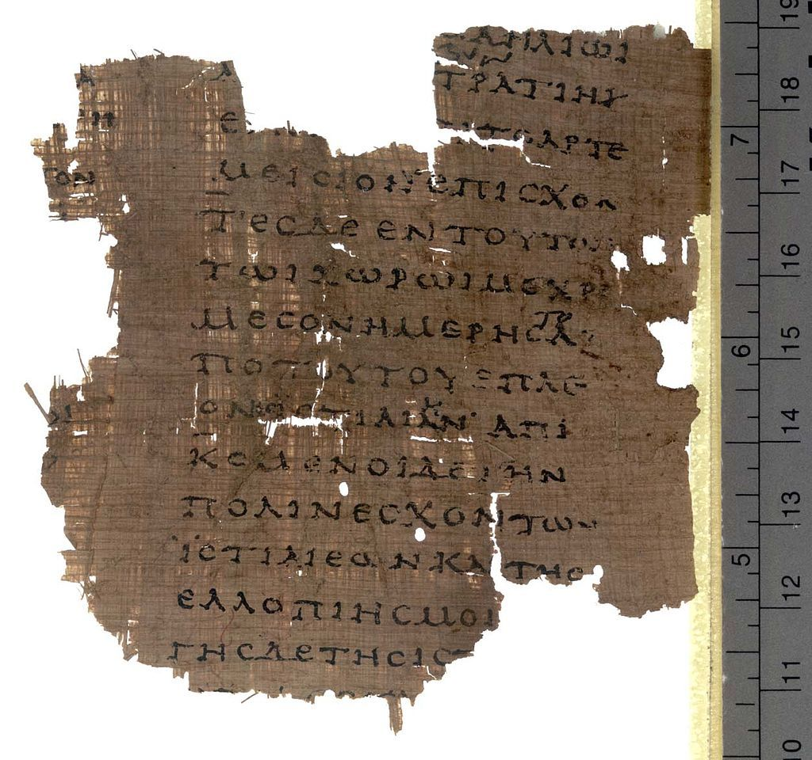
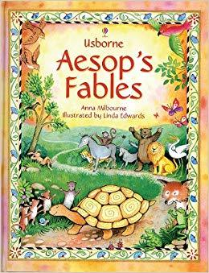
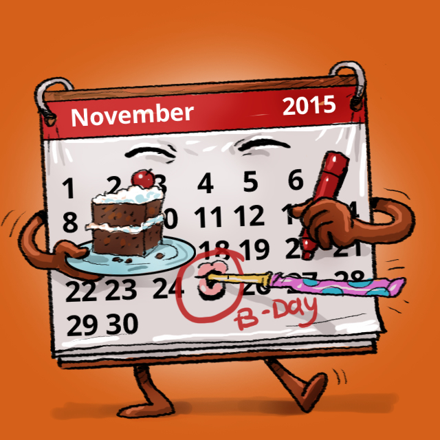
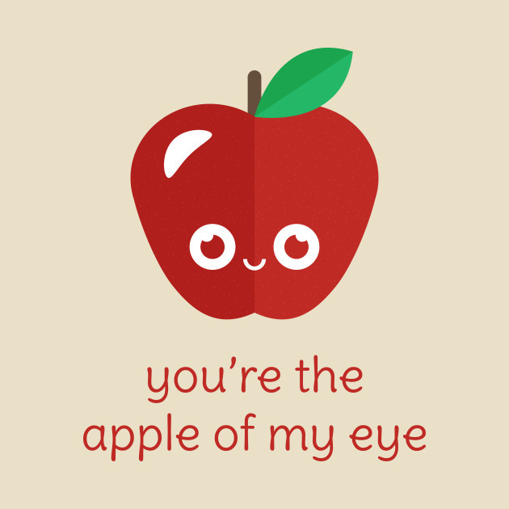
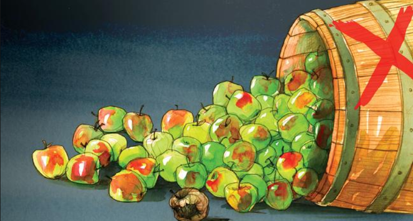
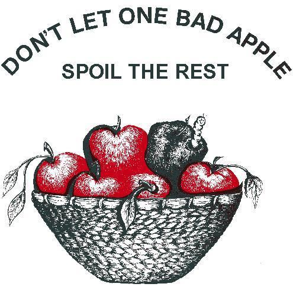

chapter13.1--handout
Background Information
Woodrow Wilson（伍德罗·威尔逊）
伍德罗·威尔逊是美国第28任总统，他是唯一一名拥有哲学博士（Doctor of Philosophy）头衔的美国总统。
约翰·戴维森·洛克菲勒和他的慈善事业
洛克菲勒私生活严谨，终身不烟不酒，一生勤俭自持，在晚年将大部分财产捐出资助慈善事业，开美国富豪行善之先河。
他创办了两所美国顶尖大学：芝加哥大学（University of Chicago ）：
洛克菲勒大学（Rockefeller university）：
现今的纽约市也有许多洛克菲勒家族出资建立的地标。
如联合国总部大楼（United Nations Headquarters）：
洛克菲勒中心（rockefeller center）
洛克菲勒在86岁时，写下了这首短诗总结自己的一生：
I was early taught to work as well as play,
My life has been one long, happy holiday;
Full of work and full of play,
I dropped the worry on the way,
And God was good to me everyday.
我从小就被教导既要娱乐也要工作，
我的人生就是一个悠长，愉快的假期；
全力工作，尽情玩乐，
我在旅途上放下了一切忧愁，
而上帝每天都善待着我。
Aesop(伊索)
伊索的名字最早出现在希腊历史学家希罗多德（Herodotus）的史学名著《历史》（The Histories）中。

伊索传说是一个奴隶，面貌不俗，“黝黑，高大，结实，短臂，厚唇，高大。他在古希腊的哲学家克桑特斯之下打工，后来以博学多闻获得释放，成为自由人，可以参与公共事务。游历过希腊各城邦。
他善讲寓言故事，游历到雅典时，对雅典人讲了《请求派王的青蛙》的寓言，会过梭伦、泰勒斯（Thales）等“古希腊七贤”（Seven Sages of Greece）.
伊索讲寓言故事全凭记忆，没有所谓的草稿，故事的主角多是动物之间的互动，如鹰与夜莺、龟和兔、蚂蚁和蚱蜢，巴勒隆的哲学家台美忒利阿斯（Demetrios Phalereus）编写了世界上第一部《伊索寓言》（Aesop's Fables）.

所以，我们从小就读的《伊索寓言》不是伊索本人亲自写的哦~
Vocabulary
belligerent
💧adj.characteristic of an enemy or one eager to fight
形容词：交战的；好战的
💧[SYN] fighting；warring
💧He could be accused of passion, but never belligerence.
可以说他很冲动，但不能说他爱挑事。
seething
💧adj.in constant agitation
形容词：火热的，沸腾的
💧[SYN] boiling
💧The meeting hall was seething at once.
会场上顿时沸腾起来了。
radiant
💧adj. radiating or as if radiating light
形容词：辐射的；光芒四射的；容光焕发的
💧Kathy smiled at her daughter's radiant face.
凯茜对着女儿容光焕发的面孔微笑着。
intimately
💧adv. in a close manner
副词：熟悉地；亲切地
💧[SYN] warmly；privately
💧I just won't discuss my intimate relationships.
我就是不想讨论我的恋爱关系。
clutch
💧v.take hold of; grab
动词： 抓住；紧握
💧[SYN] clasp
💧She stood there, the flowers still clutched in her hand.
她站在那里，手里仍然紧握着花束。
Crush Your Problems
- Rockefeller, remember, was talking to men who, a few days previously, had wanted to hang him by the neck to a sour apple tree.
句意：记住，洛克菲勒正在对几天前还想将他吊死在酸苹果树上的工人代表说话。
💧"hang him by the neck to a sour apple tree"，字面意思是“把他吊死在酸苹果树上”。
这个表达来源于美国南北战争时的一首战歌《约翰．布朗之歌 》（The John Brown Song），原句是“We'll hang Jeff Davis from a sour apple tree. 我们会把戴维斯杰夫吊死在一棵酸苹果树上",由于废除奴隶制成了内战的一个目标，这支歌就成了士兵和平民唱的一支主要歌曲。
- "This is a red-letter day in my life," Rockefeller began.
💧red-letter day，意思是“a day that is very important or very special”，也就是“非常重要或特别的一天”。

💧这是一个有着非常悠久历史的短语，其最初的应用可以追溯至1700 年左右，当时，人们普遍使用教会的日历，日历上用红色标出那些重要的基督教节日和与圣人有关的日子。
到18世纪的时候，除了表示节假日之外，还被用于表示非宗教的具有重大意义的时刻，比如与恋人相识的日子、孩子出生的日子、在国外留学的日子、受到提拔的日子，等等。
e.g. The day she became a doctor was a red letter day for her whole family.
她正式成为医生那一天是全家人的重要日子。
- Suppose Rockefeller had taken a different tack. Suppose he had argued with those miners and hurled devastating facts in their faces. Suppose he had told them by his tones and insinuations that they were wrong. Suppose that, by all the rules of logic, he had proved that they were wrong.
句意：假如洛克菲勒采取别的方式，假如他和工人们据理力争，用强硬的态度要工人交代破坏厂房的事情；假如他含沙射影地警告工人的错误行为；假如他用逻辑规则证明工人们是错的。
💧take a different tack：改变路子，改变方法 e.g.Or you could take a different tack. 或者是采取完全不同的视角。
💧" hurled devastating facts in their faces" 从字面上来理解为“把证据丢在他们脸上”，形象生动地表现出了傲慢的态度。
动词“hurled” 有 “用力投掷，大声叫骂，语气强烈的表达”。
e.g. The officer hurled insults at him. 长官大声辱骂他。
💧此外，这段话还采用了卡叔非常喜欢的排比句式， “suppose...suppose...suppose...suppose...”, 四个虚拟语气连用，非常有说服力。
Content Analysis
每次生气冲着别人发一通火，或许自己会稍微感到舒服，可是你想过对方的感受吗？他们会舒服吗？充满火药味语言和暴躁的态度能让别人认可你吗？很多情况下，这些问题的回答都是否定的。那我们到底要怎么做呢？今天的章节里，卡叔就会告诉大家。
美国总统伍德罗.威尔逊曾经说过：“试试握紧你的拳头，放马过来，我保证比你的拳头更硬，假如你走到我的身边，心平气和地说‘我们坐下来聊一聊，看看哪些值得商榷’ 很快我们就相谈甚欢。”
（"If you come at me with your fists doubled," said Woodrow Wilson, "I think I can promise you that mine will double as fast as yours; but if you come to me and say, 'Let us sit down and take counsel together, and, if we differ from each other, understand why it is that we differ, just what the points at issue are,' we will presently find that we are not so far apart after all.）
人与人之间的分歧其实差不多，所谓的分歧也没有想象中的那么大。只要我们有足够的耐心，努力沟通，彼此就能调和意见。
（If we only have the patience and the candor and the desire to get together, we will get together.）
总统这句话说得有没有道理呢？结果很快就在洛克菲勒解决暴力罢工的事情上得到了验证。他是怎么做的呢？
首先，他花了数周的时间与工人们积极交涉，然后在工人代表面前进行了一次极有影响力的演说。
（After weeks spent in making friends, Rockefeller addressed the representatives of the strikers. ）
他的演讲充满了友爱和和善，实事求是地和大家沟通，最终工人们心满意足地回到了工作岗位上，而再没有提出加薪的要求。
（It presented facts in such a friendly manner that the strikers went back to work without saying another word about the increase in wages for which they had fought so violently.）
洛克菲勒和工人们说：我们有共同的利益，你们的仁慈让我有幸站在这里，这是我一生中最荣幸，最值得纪念的日子。
（It is only by your courtesy that I am here, for I am not so fortunate as to be either one or the other; and yet I feel that I am intimately associated with you men.）
试想你的老板这样态度温和，设身处地的与你对话，你还会有不满情绪吗？
如果有人对您不满并怀有恶意，那么您无论如何也不能得到他们的赞同。
（If a man's heart is rankling with discord and ill feeling toward you, you can't win him to your way of thinking with all the logic in Christendom. ）
但换一种温和、友善的态度，您就能引导他们与您的意见趋同。
（ But they may possibly be led to, if we are gentle and friendly, ever so gentle and ever so friendly.）
卡叔还用自己小时候听过的一个寓言故事（fable）：太阳与风的故事。太阳和风争论谁的力量大，双方打赌谁能让老人把大衣脱下来。风使劲地刮，几乎成了飓风。但是风吹得越强，老人就把大衣裹得越紧。后来太阳出来了，阳光普照，不一会儿，热的满头是汗的老人就脱下了大衣。
太阳告诉风：“友善、温柔远远比愤怒、暴力更强大。”
（The sun then told the wind that gentleness and friendliness were always stronger than fury and force.）

这个故事出自于《伊索寓言》，伊索是生活在26个世纪以前的的雅典，这个寓言依然适用于我们当下。比如，自己刚买不到四个月，就已经进了第三次修理厂的新车的盖尔.康纳先生也通过良好的态度，让经销商心甘情愿的解决这个问题。
事情就像那句古话说的：一滴蜂蜜比一加仑胆汁更能吸引苍蝇。 （"A drop of honey catches more flies than a gallon of gall."）
Today's Bonus
西方人眼中的苹果
今天的文章中提到了“hang him by the neck to a sour apple tree”，大家有没有这样的疑惑：为什么是苹果树？为什么不是其他的李子，栗子，梨树呢？
到底苹果在西方人眼中有什么象征意义呢？
苹果与西方文明的渊源起始于《圣经》（the Bible ）中人类的祖先亚当和夏娃（Adam and Eve）在伊甸园（The garden of Eden）偷吃禁果的故事。
上帝造人之初，亚当和夏娃无忧无虑地生活在伊甸园里，但上帝告诫他们绝对不要偷吃园里的两棵树，即生命树和智慧树上的果子，否则必然会也严重后果。但他们没能经受住诱惑，夏娃在蛇的引诱下，吃了智慧果，并且给亚当一个，亚当同样也吃了。
上帝震怒人违背了他的命令，把他们赶出了伊甸园。而且传说亚当偷吃禁果的时候，在惊慌失措中将一个苹果核卡在喉咙里，留下一个疙瘩。作为惩罚，上帝就让这个苹果核永远留在他的喉咙里。
后来Adam's apple这个短语就被人们用来表示“男人的喉结”。
现在已经证实，禁果就是苹果，因为在拉丁语中，表示苹果（malum）的那个词语也可以表示邪恶。
但同时，亚当和夏娃偷吃禁果从某种意义上来说也透露出他们的好奇心，求知欲，而这也是人类的天性。因此，在此处苹果又有了智慧、强烈的吸引和诱惑等含义。
英语中也有许多与苹果有关的俚语、习语等，有着丰富的文化寓意和内涵。
- apple of one’s eye
心爱之物，掌上明珠，心肝宝贝。

💧在这里，apple实际指的是瞳孔（the pupil），大概因为眼珠圆的象苹果之故。
瞳孔是眼睛重要的一部分，它能调节进入眼睛的光线的强弱。瞳孔散大，对光反射消失，也是脑死亡即人死亡的表现之一。 所以，这个成语典故常用来比喻象爱护眼珠一样爱护某个最心爱的人或珍贵的东西。 - apple-polish
努力讨好,拍马屁
💧美国小学有个传统习惯，即小学生为向老师表示尊敬和感谢，常把自己家里的红苹果带到学校里来，送给自己认为好的老师。但有些学生其实对老师并没有多少喜欢，但为了讨得老师个关照，他们会像其他同学一样送苹果给老师，而且还擦得很亮很干净，于是apple polish这种行为就成了拍马屁的意思。 - One rotten apple spoils the barrel.
一只烂苹果烂一筐苹果。

💧当一个苹果开始腐烂，它也会毁掉同一容器中其它苹果。
这个短语就被引申为指团队里一个差劲的人会使每个人的表现都受到影响。我们通常就会把“表现欠佳的人”称为团队中的rotten apple.

smart word
本章中的卡叔化身暖心小天使，"A drop of honey catches more flies than a gallon of gall." 说得甜蜜又有道理。